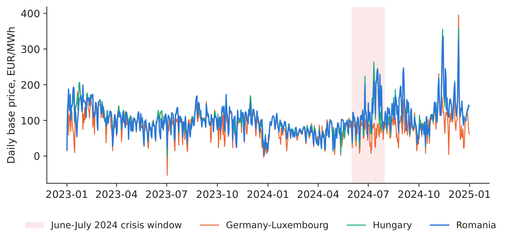
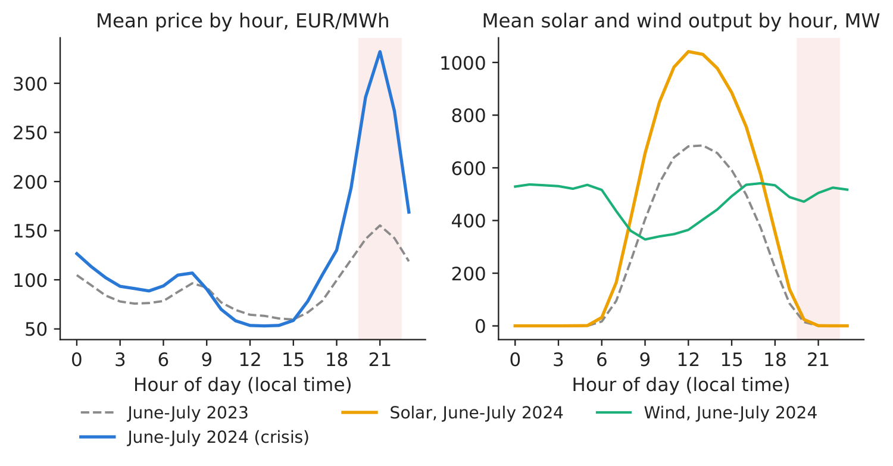
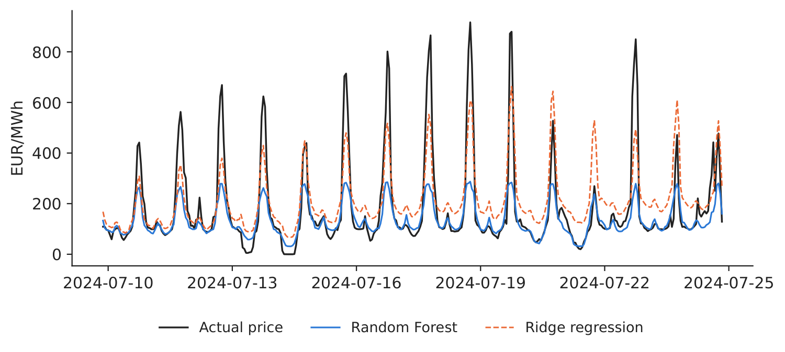
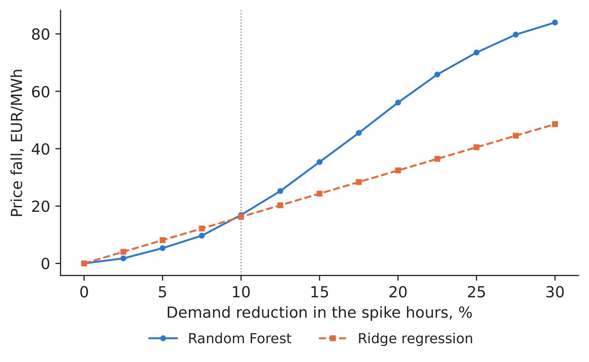

Case study 1 · Lecture 1
The summer-2024 price crisis — which intervention would have helped?
Prof. dr. Daniel Traian PELE
Bucharest University of Economic Studies, Department of Statistics and Econometrics
Romanian Academy, Institute for Economic Forecasting
The paper
Andrei, A.-V., Pele, D.-T. & Cramer, A.-A. (2026). Evaluating intervention effectiveness during extreme price events: A counterfactual analysis of Romania’s 2024 energy crisis. Proceedings of the International Conference on Business Excellence, 20(1), 84–103. doi:10.2478/picbe-2026-0013
Materials
The business question
In July 2024 the Romanian day-ahead market (PZU, Piața pentru Ziua Următoare, run by OPCOM, the Romanian power and gas market operator) cleared at more than 900 EUR/MWh in some evening hours. Three decision makers ask different questions about the same event. The transmission system operator (TSO), Transelectrica, must decide which emergency lever to pull when the next heatwave comes: call contracted demand response (DR), maximise imports, or count on more renewables. A supplier must decide whether to pay large industrial clients to cut load in the critical hours. A large consumer must decide whether to sign a curtailment contract. All three need the same number: by how much does the price fall if demand is cut by \(x\) % in the spike hours?
What the paper did
Question. Which intervention types reduce extreme prices most, how large must they be, how do they combine, which are feasible, and how do time of day and weather limit them (p. 85)?
Data. Romania, January 2018 to mid-2024, hourly ENTSO-E (European Network of Transmission System Operators for Electricity) data: generation by fuel, day-ahead load, solar and wind forecasts; day-ahead prices (a daily series aligned to the hourly records); temperature in 10 cities; oil, gas and carbon prices. The models use the last 5,000 hours (about 208 days): 4,000 for training and 1,000 for testing, the test set covering June–July 2024 (p. 88).
Method. A Random Forest (RF) with 70 engineered features predicts the price; a Ridge regression is used as a cross-check. Each scenario changes the inputs (less load, more solar or wind), recomputes the derived features and reads the new prediction.
Main findings of the paper.
- Model fit: “the Random Forest achieved a coefficient of determination (\(R^2\)) of 0.5963” (p. 90); for prices above 500 EUR/MWh “underprediction reaches 53.9 percent” (p. 91). The peak event at 1,021.61 EUR/MWh was predicted at 325.18 (p. 91).
- At the peak, solar output was “just 3 megawatts” and the supply–demand deficit was 2,686 MW (Table 1, p. 94–95).
- “Demand response of 10 percent (corresponding to approximately 728 megawatts of load reduction) achieves a 70.4 percent price reduction” (Table 2, p. 95); “no single intervention — nor any combination of interventions — achieves a price below 200 euros per megawatt-hour” (p. 95).
- RF and Ridge rank the 147 scenarios consistently (Spearman \(\rho = 0.7299\), \(p<10^{-25}\)) and both put demand response in all of their top-10 scenarios (Table 3, p. 97). Demand response is the “Tier 1” consensus lever; the best feasible combination adds “only 0.6 percentage points” to demand response alone (Tables 4–5, p. 98–99).
The method, step by step
Intuition first
Train a model that has learnt how the price responds to load, sun and wind in normal times. Then ask it: “what would the price have been in the crisis evening if load had been 10 % lower?” The difference between the two predictions is the estimated effect of the intervention — a counterfactual: what would have happened under a situation that did not occur.
Let \(y_t\) be the day-ahead price in hour \(t\) (EUR/MWh), \(L_t\) the load, \(S_t\) the solar and \(W_t\) the wind generation (MW). The residual load \(L^{res}_t = L_t - S_t - W_t\) is the demand that must be covered by dispatchable plants (gas, coal, hydro, nuclear) and imports. The model \(\hat y_t = \hat f(\mathbf x_t)\) maps the feature vector \(\mathbf x_t\) (load, solar, wind, residual load, renewable share \((S_t+W_t)/L_t\), lagged prices and lagged supply, calendar terms) to a price. A Random Forest averages \(B\) regression trees, \(\hat f(\mathbf x) = \frac1B\sum_{b=1}^{B} h_b(\mathbf x)\), each tree \(h_b\) being a set of if–then splits learnt on a bootstrap sample. A scenario with demand response \(d\) sets \(L'_t = (1-d)L_t\) and recomputes \(L'^{res}_t\) and the renewable share (the paper's eq. 10–11). The estimated effect is
Reference prices. The paper expresses scenario prices relative to the observed peak price \(y^*_t\) (eq. 9); this exercise measures the change against each model's own baseline \(\hat f(\mathbf x_t)\). The two percentages use different reference prices and should be labelled separately.
In practice
Rank the levers first, then stress-test the price level. The paper and our replication both identify cutting demand in the evening spike hours as the priority lever; extra solar does not help after sunset. Read absolute effects together with each model's accuracy in extreme-price hours.
Replicate it yourself
Notebook C1_notebook_EN.ipynb uses the course data (data/clean/: hourly prices, Romanian generation and load, cross-border flows from energy-charts.info).
Training: 1 January 2023 – 31 May 2024 (12,405 hours); test: June–July 2024 (1,464 hours). Classroom implementation: actual (not forecast) load, solar and wind; hourly prices; no weather variables.

Figure 1. Daily base price, 2023–2024; crisis window shaded.
Source: energy-charts.info; 1.1.2023–31.12.2024.

Figure 2. Hourly profile, June–July 2024 vs 2023.
Source: energy-charts.info; June–July 2023 and 2024.
What our data show. The crisis window averaged 121.8 EUR/MWh, with a maximum of 916.72 EUR/MWh on 18 July 2024, 21:00 (local time). The crisis was an evening problem: at 21:00 the mean price was 332.3 EUR/MWh (155.4 a year earlier) while solar output averaged 1 MW, against 1,031 MW at 13:00 (Figure 2) — consistent with the paper's peak event, which had almost no solar. The highest training price was 436.89 EUR/MWh, so the models had never seen prices like those of July 2024.
Table 1. Test accuracy, 01 June 2024 – 31 July 2024 (CET, Central European Time delivery days, 1,464 hours; “perfect foresight” = actual load, solar and wind of the hour, optimistic; “gate-closure information” = prices of \(d-1\), realised fundamentals of \(d-2\); MAE = mean absolute error, EUR/MWh; “Under.” = mean underprediction in % of the actual price). Best value in bold.
| Model | \(R^2\) | MAE | MAE 200–500 | MAE \(>\)500 | Under. \(>\)500, % |
|---|---|---|---|---|---|
| Naive (price 24 h earlier) | 0.584 | 41.6 | 110.7 | 180.1 | 15.8 |
| RF, gate-closure information | 0.468 | 35.4 | 116.6 | 441.4 | 64.4 |
| Ridge, perfect foresight | 0.639 | 45.8 | 80.4 | 214.2 | 28.8 |
| RF, perfect foresight | 0.553 | 32.4 | 98.0 | 406.8 | 59.1 |
Source: our computation on energy-charts.info data; 31 test hours above 500 EUR/MWh.

Figure 3. Actual vs predicted, 10–24 July 2024.
Source: our models; energy-charts.info.

Figure 4. Predicted price fall vs demand cut, mean over the 74 spike hours.
Source: our models; test window June–July 2024.
Table 2. Scenario effects in the 74 spike hours (price above 310.9 EUR/MWh), reduction against each model's own baseline. Largest effect in bold.
| Scenario (spike hours) | RF, EUR/MWh | RF, % | Ridge, EUR/MWh | Ridge, % | MW cut |
|---|---|---|---|---|---|
| Demand response 5% | 5.3 | 2.2 | 8.1 | 2.3 | 386 |
| Demand response 10% | 16.9 | 7.0 | 16.2 | 4.7 | 771 |
| Demand response 20% | 56.1 | 22.7 | 32.4 | 9.3 | 1,543 |
| Demand response 30% | 84.0 | 33.7 | 48.6 | 14.0 | 2,314 |
| Solar +50% | 0.5 | 0.2 | 0.2 | 0.1 | 0 |
| Wind +100% | 8.0 | 3.3 | 3.6 | 1.1 | 0 |
| Solar +50%, wind +50%, DR 5% | 10.7 | 4.5 | 10.1 | 2.9 | 386 |
Our result. The RF has \(R^2 = 0.553\) and the lowest MAE (32.4 EUR/MWh), but in hours above 500 EUR/MWh it underpredicts by 59.1 % on average, so scenario price levels should be read together with this diagnostic. These RF and Ridge rows use the actual load, solar and wind of the delivery hour (perfect foresight), so their accuracy is optimistic, not a forecast; with only the information available at gate closure (12:00 CET on \(d-1\): prices of \(d-1\); realised fundamentals only up to \(d-2\), the last metered day), the same RF reaches \(R^2 = 0.468\) and MAE 35.4 EUR/MWh. The scenarios use the perfect-foresight model because they change the fundamentals of the spike hour itself. A 10 % demand cut (771 MW on average) lowers the predicted spike price by 16.9 EUR/MWh (7.0 %) in the RF and by 16.2 EUR/MWh in Ridge; solar \(+50\,\%\) changes almost nothing (0.5 EUR/MWh), because spike hours are after sunset. The two models rank the 75 scenarios similarly (Spearman \(\rho = 0.906\)). Decision number: at the RF effect, the remaining 90 % of load in the spike hours would have paid about 8.21 million EUR less; this is the upper bound a supplier could pay for 57,086 MWh of curtailment.
Discussion questions for managers
- In a board memo on demand response, how would you distinguish the observed event price, the model baseline and the scenario price? Which comparison supports your decision?
- Transelectrica holds about 800 MW of contracted demand response (paper, p. 87). Is that enough for a July-2024-type evening? What would you need to know?
- Your company owns a solar park. Why does it earn little in a crisis like this one, and what asset would earn more?
- The model never saw prices above 436.89 EUR/MWh during training. How should this change the way you use its scenarios?
- A large consumer is offered 300 EUR per MWh not consumed in critical hours. Using Table 2, would you sign? What else matters (production loss, notice time)?
Limitations of the classroom replication
(i) Our scenarios are model-based associations, not a simulation of the merit order. (ii) Sample: we average over 74 hours of one summer. (iii) Extrapolation: crisis prices lie outside our training range, so absolute effects should be stress-tested. (iv) Imports, interconnector limits and hydro reservoirs are not scenario levers in our notebook. (v) Our scenario model uses actual rather than forecast fundamentals (perfect foresight), so it is optimistic about what was knowable the day before.
Summary of Case 1
- QuestionWhich emergency lever lowers the spike price most in a heatwave evening?
- DataHourly RO (Romania) prices, load, solar, wind, hydro, gas, imports; train 2023–May 2024, test June–July 2024.
- MethodRandom Forest + Ridge; counterfactual: change load/solar/wind, re-predict.
- ResultDR 10 %: \(-\)16.9 EUR/MWh (RF), \(-\)16.2 (Ridge); solar +50 %: \(\approx\)0. Paper: DR is Tier 1.
- DecisionContract evening demand response first; value it at most 8.21 mil. EUR per summer like 2024.

Source: our RF and Ridge models on energy-charts.info data, spike hours of June–July 2024.
Abbreviations
| CET | Central European Time |
|---|---|
| DR | demand response |
| ENTSO-E | European Network of Transmission System Operators for Electricity |
| MAE | mean absolute error |
| OPCOM | the Romanian power and gas market operator |
| PZU | Piața pentru Ziua Următoare, the Romanian day-ahead market |
| RF | Random Forest |
| RO | Romania |
| TSO | transmission system operator |
The text, numbers, charts and tables of this page are those of the case brief; every number is computed by the case notebook on the course data.